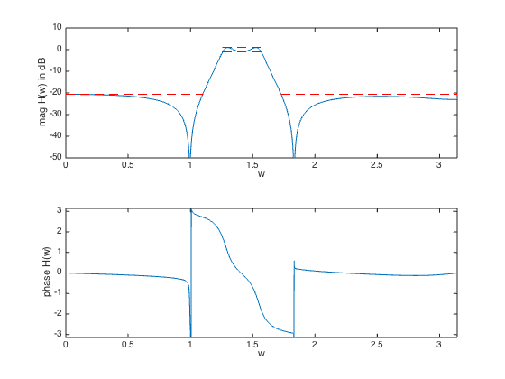

% "Linear Programming Design of IIR Digital Filters with Arbitrary % Magnitude Functions" by L.R. Rabiner, N.Y. Graham, and H.D. Helms % (figures are generated) % % Designs a bandpass IIR filter using spectral factorization method where we: % - minimize maximum stopband attenuation % - have a constraint on the maximum passband ripple % % minimize max |H(w)| for w in the stopband % s.t. 1/delta <= |H(w)| <= delta for w in the passband % % where we now have a rational frequency response function: % % H(w) = sum_{m=0}^{M-1} b_m exp{-jwm} / sum_{n=1}^{N-1} a_n exp{-jwn} % % We change variables via spectral factorization method and get: % % minimize max R(w) for w in the stopband % s.t. (1/delta)^2 <= R(w) <= delta^2 for w in the passband % R(w) >= 0 for all w % % where R(w) is the squared magnited of the frequency response % (and the Fourier transform of the autocorrelation coefficients r). % We represent R(w) = N_hat(w)/D_hat(w), where now R(w) is a rational % function since we deal with IIR filter (see the reference paper). % % Variables are coeffients of the numerator, denoted as c, and % denominator, denoted as d. delta is the allowed passband ripple. % This is a quasiconvex problem and can be solved using bisection. % % Written for CVX by Almir Mutapcic 02/02/06 %********************************************************************* % user's filter specs (for a low-pass filter example) %********************************************************************* % number of coefficients for the IIR filter (including the zeroth one) % (also without loss of generality we can assume that d_0 = 1, which % is the zeroth coefficient of the autocorrelation denominator) M = 6; % nominator N = 6; % denominator % maximum passband ripple in dB (+/- from the nominal 0 dB value) delta = 1; % specification of the upper and lower bound functions U(w) and L(w) % freq specs wstop1 = 0.35*pi; wpass1 = 0.4*pi; wpass2 = 0.5*pi; wstop2 = 0.55*pi; %********************************************************************* % create optimization parameters %********************************************************************* % rule-of-thumb discretization (from Cheney's Approx. Theory book) sample_order = 30; m = 15*(sample_order); w = linspace(0,pi,m)'; % omega % A's are matrices used to compute the power spectrum Anum = [ones(m,1) 2*cos(kron(w,[1:M-1]))]; Aden = [ones(m,1) 2*cos(kron(w,[1:N-1]))]; % first stopband 0 <= w <= wstop1 ind = find((0 <= w) & (w <= wstop1)); As1_num = Anum(ind,:); As1_den = Aden(ind,:); % passband wpass1 <= w <= wpass2 ind = find(wpass1<=w & w<=wpass2); Ap_num = Anum(ind,:); Ap_den = Aden(ind,:); % second stopband wstop2 <= w <= pi ind = find(w >= wstop2); As2_num = Anum(ind,:); As2_den = Aden(ind,:); %******************************************************************** % optimization %******************************************************************** % use bisection (on the log of vars) to solve for the min stopband atten Us_top = 1e-0; % 0 dB Us_bot = 1e-8; % -80 dB (in original variables) while( 20*log10(Us_top/Us_bot) > 1) % try to find a feasible design for given specs Us_cur = sqrt(Us_top*Us_bot); % [b_cur,a_cur] = iir_mag_design_spec_fact(w,L,U,N,M); % formulate and solve the magnitude design problem cvx_begin quiet variable c(M,1) variable d(N-1,1) % feasibility problem % passband constraints (Ap_num*c) <= (10^(+delta/20))^2*(Ap_den*[1;d]); % upper constr (Ap_num*c) >= (10^(-delta/20))^2*(Ap_den*[1;d]); % lower constr % stopband constraint (As1_num*c) <= (Us_cur)*(As1_den*[1;d]); % upper constr (As2_num*c) <= (Us_cur)*(As2_den*[1;d]); % upper constr % nonnegative-real constraint Anum*c >= 0; Aden*[1;d] >= 0; cvx_end % bisection if strfind(cvx_status,'Solved') % feasible fprintf(1,'Problem is feasible for stopband atten = %3.2f dB\n', ... 10*log10(Us_cur)); Us_top = Us_cur; b = spectral_fact(c); a = spectral_fact([1;d]); else % not feasible fprintf(1,'Problem not feasible for stopband atten = %3.2f dB\n', ... 10*log10(Us_cur)); Us_bot = Us_cur; end end % display the max attenuation in the stopband (convert to original vars) fprintf(1,'\nOptimum min stopband atten is between %3.2f and %3.2f dB.\n',... 10*log10(Us_bot),10*log10(Us_top)); disp('Optimal IIR filter coefficients are: ') disp('Numerator: '), b disp('Denominator: '), a %********************************************************************* % plotting routines %********************************************************************* % frequency response of the designed filter, where j = sqrt(-1) w = linspace(0,pi,5*m)'; % omega H = ([exp(-j*kron(w,[0:M-1]))]*b)./([exp(-j*kron(w,[0:N-1]))]*a); % magnitude plot figure(1) subplot(2,1,1) plot(w,20*log10(abs(H)), ... [wpass1 wpass2],[delta delta],'r--', ... [wpass1 wpass2],[-delta -delta],'r--', ... [0 wstop1],[10*log10(Us_top) 10*log10(Us_top)],'r--', ... [wstop2 pi],[10*log10(Us_top) 10*log10(Us_top)],'r--') xlabel('w') ylabel('mag H(w) in dB') axis([0 pi -50 10]); % phase plot subplot(2,1,2) plot(w,angle(H)) axis([0,pi,-pi,pi]) xlabel('w'), ylabel('phase H(w)')
Problem not feasible for stopband atten = -40.00 dB
Problem is feasible for stopband atten = -20.00 dB
Problem not feasible for stopband atten = -30.00 dB
Problem not feasible for stopband atten = -25.00 dB
Problem not feasible for stopband atten = -22.50 dB
Problem not feasible for stopband atten = -21.25 dB
Problem is feasible for stopband atten = -20.62 dB
Problem not feasible for stopband atten = -20.94 dB
Optimum min stopband atten is between -20.94 and -20.62 dB.
Optimal IIR filter coefficients are:
Numerator:
b =
0.0481
0.0057
0.0502
0.0206
0.0294
0.0336
Denominator:
a =
0.5070
0.0051
0.7390
0.2818
0.2443
0.2402
